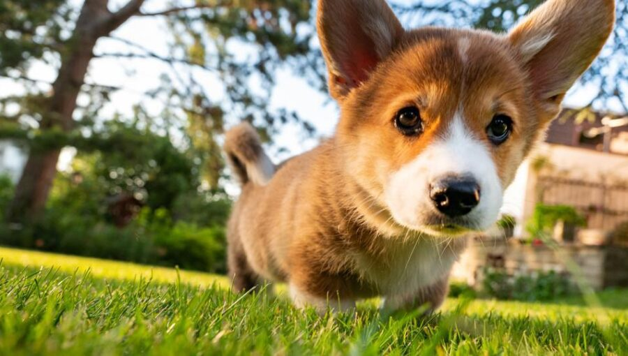

Information about Welsh Corgi

Breed origin
Pembroke Welsh Corgi is descended from Vallhunds, Swedish cattle dogs that were brought to Wales by the Vikings in the 9th and 10th centuries. Others think they may have been descended from dogs that were brought to Wales by Flemish weavers in the 12th century.
Either way, the breed has a rather misty historical pedigree. Farmers who kept working dogs in the past bred the best dogs for the jobs they wanted them to do. They didn’t keep good records about the matings.
In the 1920s, the UK Kennel Club recognized Corgis as purebred dogs. They were officially known as Welsh Corgis when exhibited for the first time in 1925. At that time, Pembrokes and Cardigans were shown in the same class as one breed.
Then, in 1934, the Kennel Club recognized the Pembroke and the Cardigan as two separate breeds. In that same year, the American Kennel Club followed suit. Pembrokes were first shown in the U.S. in 1936.
Pembroke Corgi size
Pembroke Welsh Corgis are between 10 and 12 inches tall at the shoulders, and weigh no more than 30 pounds.
Pembroke Welsh Corgi Highlights
- Pembrokes are vocal dogs that have a tendency to bark at anything and everything.
- While they are intelligent dogs, they also can be stubborn. If housebreaking is a problem, crate training is advised.
- Their strong herding instinct may cause them to nip at the heels of children when they are playing.
- Pembrokes are prone to overeating. Their food intake should be monitored closely.
- Even though they are small dogs, Pembrokes have a lot of energy and need a healthy amount of exercise each day.
Quick Corgi facts
- The name “Corgi” comes from the Welsh words “cor” (dwarf) and “gi” (dog).
- There are two breeds of Corgi: the Pembroke Welsh Corgi and the Cardigan Welsh Corgi.
- Corgis are known for their short legs, stocky build, and big ears.
- They were originally bred as herding dogs, but they are now popular as family pets.
- Corgis are intelligent and easy to train, but they can also be stubborn.
- They are known for their playful personality and loyalty to their family.
More info about Welsh Corgi
